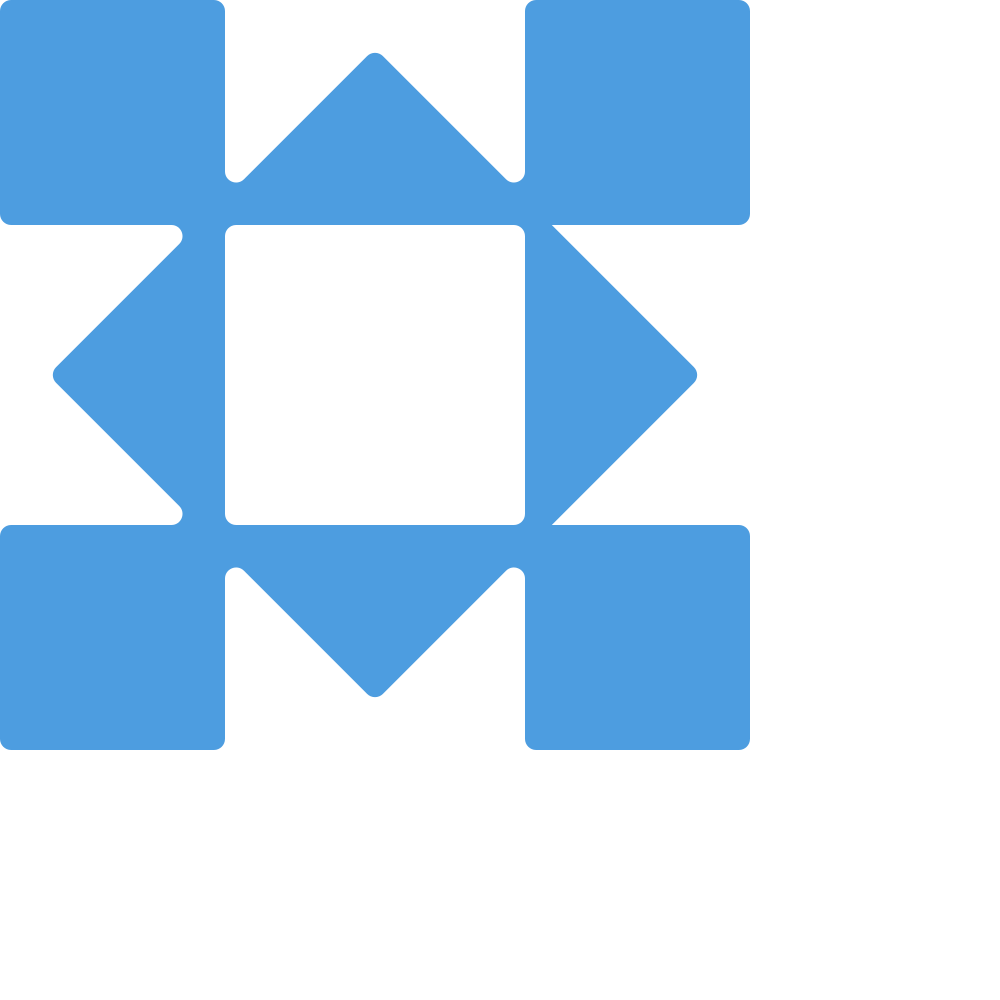
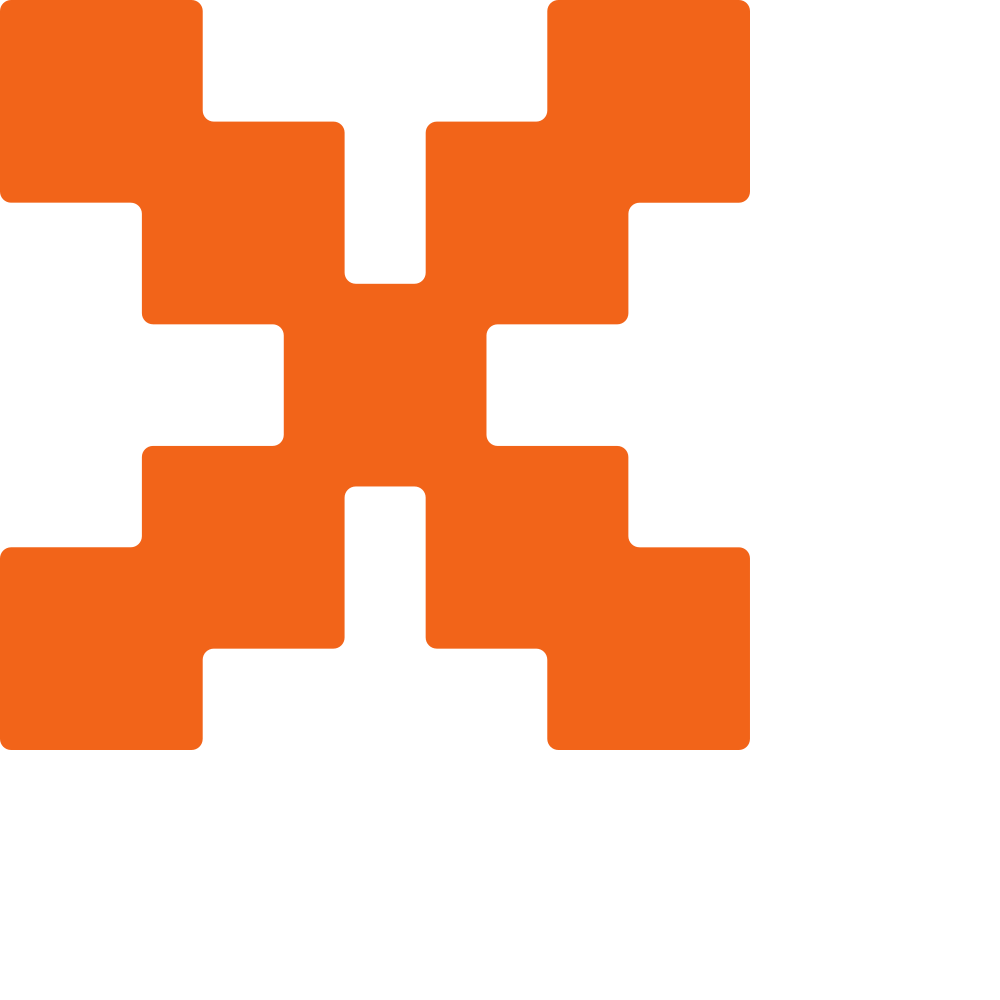
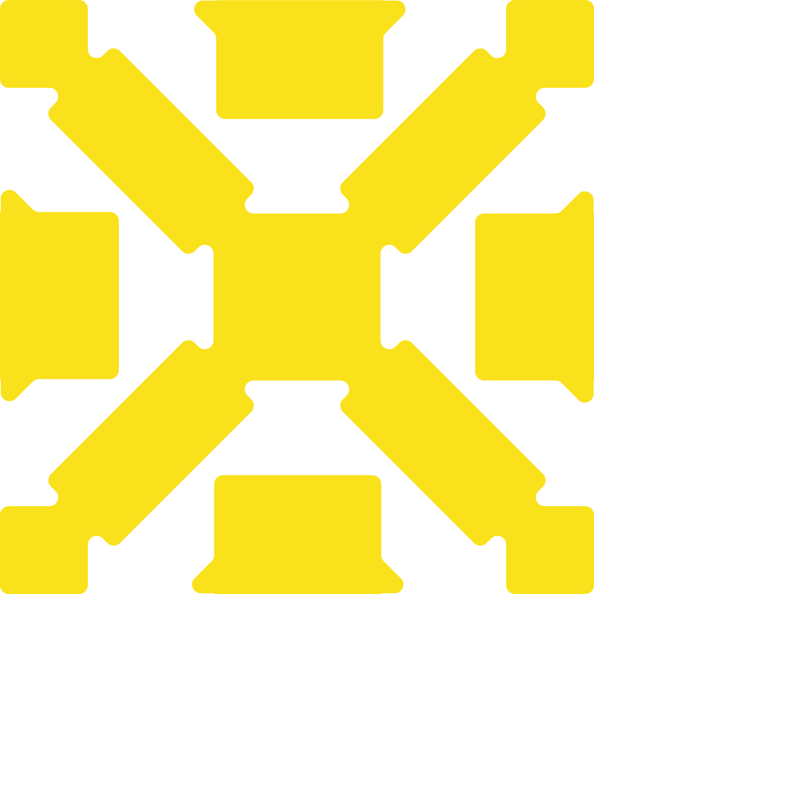

Build a Multimodal Pitch & Deck Critic
with Gemma 4 & Local Ollama
Turn your laptop into a ruthless, 100% private AI Investment Committee that listens to a 30-second spoken elevator pitch (16kHz WAV), inspects slide deck visuals (280 vs 1,120 vision tokens), catches cross-modal contradictions, and verifies unit economics with deterministic tools.

Native Audio IngestionFeed raw 16kHz 16-bit mono PCM WAV audio directly into gemma4:e2b with zero external Whisper ASR step.

Variable Vision BudgetsCompare 280 tokens (448×448 layout) vs. 1,120 tokens (1120×1120 dense financial tables & 8pt footnotes).

Deterministic VC Tools4 native Ollama function calls (audit_unit_economics, verify_tam_math, density & buzzword checks).
Nuno João Andrade
Senior Developer & Cloud Platform Expert (GCP / AWS) • Google Developer Expert (GDE) for Cloud
10+ Years in Cloud Architecture & High-Performance AI
Experienced Backend Developer and Cloud Architect with over a decade of expertise defining architectures, building, and migrating mission-critical systems to cloud and edge environments. Passionate about practical, production-grade AI agents and open-weights models (Gemma 4, Gemini, Google ADK, Node.js, C++).
Core Industry Sectors
- High-Volume Transaction Systems
- Energy Sector & Smart Grids
- Gaming Industry Backends
- Computer Vision & Multimodal AI
Connect & Resources
- LinkedIn: linkedin.com/in/nuno-andrade-964b2416
- Blog & Articles: https://nja.dev
- GitHub: github.com/nuno-joao-andrade
- Beyond Code: Openwater Swimmer 🏊♂️
Audio-Visual Cognitive Dissonance in Startup Pitches
Why do 80% of early-stage pitches lose an Investment Committee in the first 30 seconds? Because spoken claims contradict visual slide evidence.
🎙️ What the Founder Says Out Loud (Audio)
“Our capital efficiency is best-in-class — our burn multiple is a rock-solid 1.0x, our LTV-to-CAC is 4.8x, and we are tackling a $90 billion bottom-up TAM across 150,000 mid-market companies paying $3,000 a year!”
- Sounds confident, fast-paced, and investor-ready.
- Text-only transcripts miss tone, pacing, and visual tables.
📊 What Slide #2 Actually Shows (Visuals)
When Gemma 4 inspects the financial table on Slide #2 at 1,120 vision tokens:
- Net New ARR: $1.2M vs. Monthly Burn: $350K/mo ($4.2M/yr) ➔ Actual Burn Multiple = 3.50x!
- Bottom-Up TAM Math: 150,000 × $3,000 = $450M (200x inflation vs. $90B claim!).
- 8pt Footnote: Excludes $190K/mo AWS GPU cluster costs.
Gemma 4 (gemma4:e2b) + Local Ollama Pipeline
Zero cloud API keys, zero network latency spikes on conference Wi-Fi, and zero data retention.
🧠 Configurable Thinking
We enable think: true on Ollama's /api/chat endpoint so gemma4:e2b plans its cross-modal audit inside message.thinking before emitting JSON.
🖼️ Vision Budget Control
In shared/visionBudget.js, we use sharp to map 280 tokens (448×448) vs. 1,120 tokens (1120×1120) before base64 encoding.
🔒 Strict Zod Schemas
In shared/schemas.js, we convert Zod v4 schemas via z.toJSONSchema() and pass them to Ollama's format parameter.
Setting Up Node.js & Ollama (gemma4:e2b)
All dependencies are modern, vulnerability-free ES Modules (0 vulnerabilities on npm audit).
5 Self-Contained Step Folders & 3 Pitch Fixtures
Every step is ready to run with cd step-0X-... && npm start. Pre-built test audio & slides live in fixtures/.
| Time | Step Folder | Command | What You Will Experience & Learn |
|---|---|---|---|
| 00–15m | step-01-setup/ | cd step-01-setup && npm start |
Verify Local Ollama (gemma4:e2b) + Run the 20s Live Pitch Roast on QuantumSynergy.ai. |
| 15–35m | step-02-narrative/ | cd step-02-narrative && npm start |
Sprint 1: Native 16kHz WAV ingestion + 5-beat Narrative Arc scoring with <think> & Zod JSON. |
| 35–55m | step-03-contradictions/ | cd step-03-contradictions && npm start |
Sprint 2: Cross-Modal Contradiction Detection + 280 vs. 1,120 Vision Token Budget A/B test. |
| 55–75m | step-04-tools/ | cd step-04-tools && npm start |
Sprint 3: 4 Deterministic VC Tool Calls (audit_unit_economics, verify_tam_math, etc.) + IC Verdict. |
| 75–90m | step-05-arena/ | cd step-05-arena && npm start |
The Live Pitch Arena Finale: Full Portugal Tech Week Web UI (Record 30s Mic / Upload WAV + Slides). |
The 20-Second Pitch Roast & Health Check
File: step-01-setup/index.js • Fixture: fixtures/fixture_01_roast/ (QuantumSynergy.ai)
🎤 Spoken Claim vs. Slide #1 Reality
- Spoken @ 00:05: “Zero churn & 4,200 enterprise pilots!”
- Slide #1 Table: 18.4% Monthly Logo Churn & 3 Unpaid Design Partners ($14.2K ARR).
- Spoken @ 00:11: “Infinite LTV!” vs. Slide $48.5K CAC / $9.2K LTV (0.19x).
🔥 Resulting IC Verdict: HARD PASS (Score: 12/100)
Tools Triggered: flag_buzzword_overload catches 11 buzzwords in 19 seconds; audit_unit_economics flags a 164.8x annual burn multiple.
Native 16kHz Audio Ingestion & Narrative Arc Scoring
File: step-02-narrative/index.js & shared/audioUtils.js • Scoring the 5 Pitch Beats (0–10)
📊 5 Scored Narrative Beats (shared/schemas.js)
- 1. Hook (0–10): Opening attention-grabber & timestamp range.
- 2. Problem (0–10): Customer pain clarity & urgency.
- 3. Solution (0–10): Product mechanism & differentiation.
- 4. Traction (0–10): ARR, growth & unit economics claims.
- 5. The Ask (0–10): Fundraising amount & 18-month milestones.
🧠 Why Enable think: true?
Gemma 4 segments the pitch timeline chronologically and evaluates vocal pacing (WPM) inside <think> before committing to numeric scores.
Variable Vision Token Budgets: 280 vs. 1,120 Tokens
Why waste 4× compute on a minimalist title slide—or lose critical 8pt financial footnotes by downsampling a dense table?
⚡ 280 Vision Tokens (448×448 px • Layout Mode)
- Best For: Title slides, hero value propositions, simple 3-bullet layouts (Slide #1).
- Latency & KV Cache: ~4× faster prefill and minimal RAM footprint on laptop GPUs/CPUs.
- Trade-off: Small 8pt fine-print footnotes blur below OCR legibility threshold!
🔬 1,120 Vision Tokens (1120×1120 px • Dense Mode)
- Best For: Financial tables, cohort retention charts, dense architecture diagrams (Slide #2 & #3).
- High-Res OCR: Reads every cell in CloudMetrics Pro Slide #2 plus the 8pt bottom footnote:
- “*Footnote: Spoken pitch figures exclude $190k/mo AWS GPU cluster costs and 4.2% monthly logo churn.”
Cross-Modal Contradiction Detection (Audio × Slides)
File: step-03-contradictions/index.js • Fixture: fixtures/fixture_02_sprint/ (CloudMetrics Pro)
🚨 Contradiction #1: Burn Multiple Lie (FATAL_BS)
Spoken @ 00:08: “Burn multiple is a rock-solid 1.0x”
Slide #2 Evidence: $350K/mo burn ($4.2M/yr) ÷ $1.2M Net New ARR = 3.50x burn multiple.
🚨 Contradiction #2: 200x TAM Inflation (FATAL_BS)
Spoken @ 00:18: “$90B bottom-up TAM”
Slide #2 Evidence: 150,000 customers × $3,000 ACV = $450M actual TAM.
🚨 Contradiction #3: LTV:CAC Exaggeration (MAJOR)
Spoken @ 00:13: “4.8x LTV:CAC” vs. Slide #2: $31,200 LTV ÷ $18,400 CAC = 1.70x.
The 4 Deterministic VC “Bullshit Detector” Tools
Let Gemma 4 extract the numbers from audio & slides — let deterministic Node.js functions execute the exact math!
1. audit_unit_economics
Computes (monthlyBurn × 12) / netNewArr and ltv / cac. Flags FAIL if Burn Multiple > 3.0x or deviates from spoken claim by > 0.25x.
2. verify_tam_math
Computes bottom-up TAM: customers × annualPrice. Flags FAIL (TAM_INFLATED) if claimed TAM exceeds bottom-up math by > 1.25x.
3. check_slide_density
Audits words & data points per slide. Flags FAIL (WALL_OF_TEXT) if > 75 words (e.g., Slide #3 with 96 words) and recommends 1120 tokens.
4. flag_buzzword_overload
Scans transcript & slides for empty VC buzzwords (quantum-ready, autonomous mesh, infinite LTV) and calculates hits/minute.
Multi-Turn Ollama Tool Loop & Final IC Verdict
File: step-04-tools/index.js & shared/client.js • Grounding the Final Verdict in Deterministic Math
📋 Tool Execution Results on CloudMetrics Pro
audit_unit_economics➔ FAIL (Actual Burn Multiple 3.50x vs 1.0x claimed; LTV:CAC 1.70x vs 4.8x).verify_tam_math➔ FAIL ($90B claimed vs $450M bottom-up = 200x inflation).check_slide_density➔ FAIL (Slide #3 has 96 words — Wall of Text).flag_buzzword_overload➔ PASS (Only 2 buzzwords).
🎯 Final Grounded Output (InvestmentCommitteeVerdictSchema)
Combines verdict (HARD_PASS / DIG_DEEPER / INVEST), overallIcScore, liveRoast, and topFixRecommendation.
The Live Portugal Tech Week Pitch Arena UI
Full-stack Express + React 19 + Vite + Tailwind CSS v4 Web App at http://localhost:5173 (API at :4000).
1. Record or Upload Audio
Use ● Record 30s Pitch (Mic) (browser Web Audio resampled in-memory to 16kHz mono WAV) or click ↑ Upload Audio (.wav), or load a 1-click PTW Demo Preset.
2. Upload Slides & Set Budgets
Drag & drop up to 3 slide images (PNG/JPG/WEBP), edit slide titles, and toggle each slide between 280 Tokens (Layout) and 1,120 Tokens (Dense).
3. Live SSE Streaming Verdict
Watch real-time Server-Sent Events (POST /api/pitch/analyze-stream) stream Gemma 4's <think> trace, tool badges, contradictions, and Live Roast!
Workshop Cheat Sheet & Stay Connected
You now have a complete, 100% local multimodal AI pitch coach running on your own machine with gemma4:e2b and Ollama.
👤 Connect with Nuno João Andrade
🎯 Key Engineering Takeaways
- Native Audio + Vision: gemma4:e2b processes 16kHz WAV & PNG slides locally in one pass.
- Right-Size Vision Tokens: Use 280 for layout slides and 1,120 for dense tables/footnotes.
- Deterministic Tool Calling: Delegate financial ratios & TAM math to verified code tools.